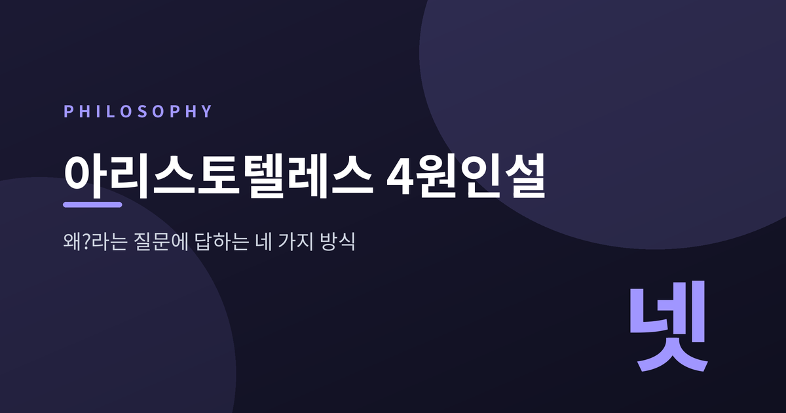
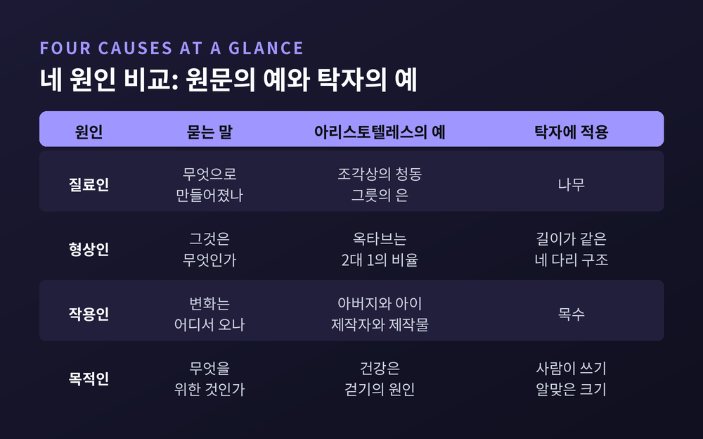
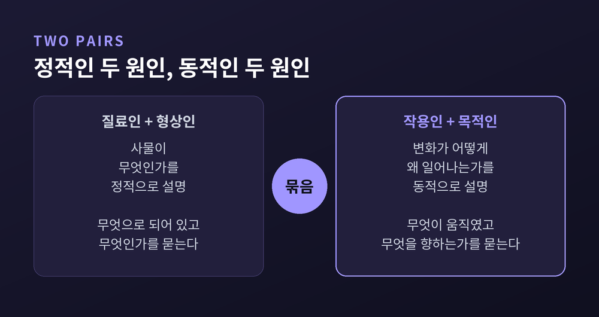
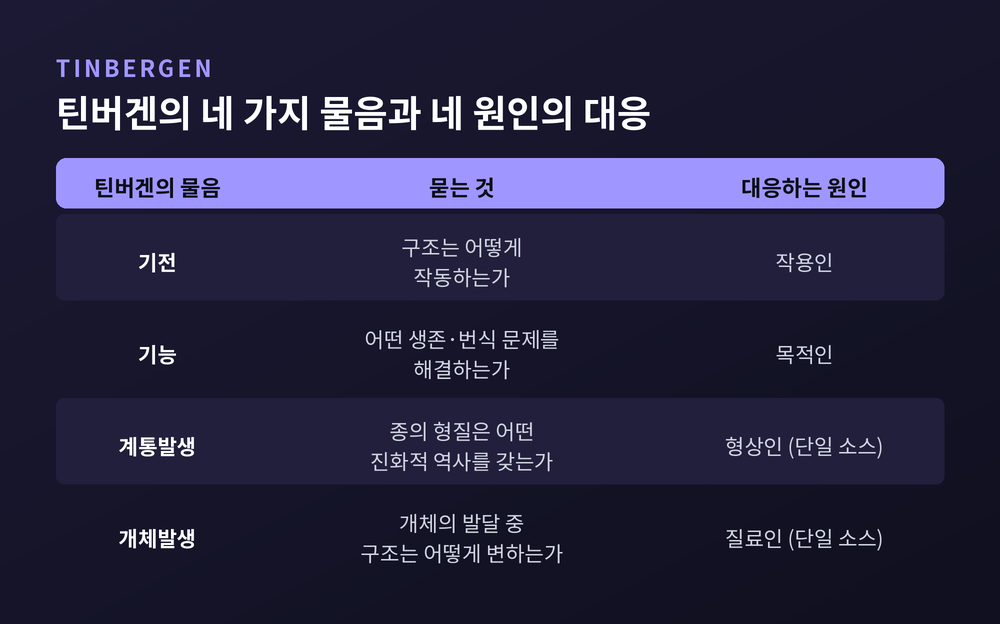

오늘은 아리스토텔레스의 4원인설에 대해 이야기해 보려 합니다. 질료인·형상인·작용인·목적인이라는 네 낱말은 철학 입문서마다 나오지만, 정작 이것이 무엇에 대한 이론인지는 흐릿하게 남기 쉽습니다. 이 글에서는 4원인설을 '왜?'라는 질문에 답하는 네 가지 방식으로 읽고, 그 틀이 오늘날 어디까지 이어지는지 따라가 보겠습니다.
먼저 결론을 세 줄로 적겠습니다.
흔히 4원인설이라고 부르지만, 아리스토텔레스가 쓴 낱말은 아이티아(aitia)입니다. 스탠퍼드 철학백과는 이 말이 영어로 '원인', '설명', '왜냐하면' 등으로 갈린다는 점을 먼저 짚습니다. 위키피디아도 '설명'이 더 가까운 번역이라고 정리합니다.
워싱턴대의 마크 코언은 한 걸음 더 나아가 '설명 요인'이라는 표현을 권합니다. 이유가 있습니다. '만든다'라는 말에는 여러 뜻이 겹쳐 있기 때문입니다. 무엇으로 만들어졌는지, 무엇으로 규정되는지, 누가 만들었는지, 무엇을 위한 것인지가 모두 '만든다'의 한 갈래입니다. 이 가운데 어느 뜻을 취하느냐에 따라 '왜?'에 대한 답이 네 가지로 나뉩니다.
그러니 4원인설은 사건을 일으킨 네 가지 힘의 목록이 아닙니다. 하나의 사물을 이해하려고 던지는 네 가지 질문의 목록입니다.
아리스토텔레스에게 이는 앎의 조건이기도 했습니다. 『분석론 후서』에는 어떤 것의 원인을 파악했을 때에야 그것을 안다고 생각한다는 취지의 문장이 있고, 『자연학』 II권 3장에도 그 '왜'를 파악하기 전에는 안다고 생각하지 않는다는 대목이 있습니다. 질문이 네 갈래라면, 안다는 것도 네 갈래의 답을 갖추는 일이 됩니다.
스탠퍼드 철학백과는 네 원인을 각각이 답하는 물음으로 정리합니다.
질료인(material cause)은 "무엇으로 만들어져 있는가"에 답합니다. 그리스어 휠레(hyle)가 이 자리에 있고, 각 사물이 그로부터 생겨나는 일차적 기체를 뜻합니다. 조각상의 청동, 그릇의 은이 아리스토텔레스가 든 예입니다.
형상인(formal cause)은 "그것은 무엇인가"에 답합니다. 답에서 가려내는 것은 사물의 본질, 곧 '무엇이었음'입니다. 에이도스(eidos)라 부르며, 옥타브가 2대 1의 비율이라는 설명이 그 예로 전해집니다. 형상은 겉모양과 다릅니다. 그릇의 본질은 바깥 윤곽이 아니라 액체를 담을 수 있다는 데 있다는 해설이 이 구분을 잘 보여줍니다.
작용인(efficient cause)은 "변화는 어디서 오는가"에 답합니다. 오늘날 우리가 '원인'이라 부를 때 떠올리는 것이 바로 이쪽입니다. 아버지가 아이의 원인이고, 제작자가 제작물의 원인입니다.
목적인(final cause)은 "그것의 좋음은 무엇인가"에 답합니다. 끝, 곧 텔로스(telos)입니다. 코언이 옮긴 정의는 이렇습니다. 어떤 것이 무엇을 위한 것인지가 그것의 원인이며, 건강이 걷기의 원인인 것과 같다는 것입니다.
여기서 청동의 예를 한 번 더 보겠습니다. 청동이 조각상의 질료라는 사실만으로는, 그것이 왜 하필 '조각상'인지 설명되지 않습니다. 같은 청동으로 종이나 방패도 만들 수 있기 때문입니다. 질료에 형상이 더해져야 비로소 이 사물이 됩니다. 코언의 해설이 정확히 이 점을 짚습니다.
원문의 예시는 간결해서 오히려 추상적으로 읽힙니다. 위키피디아가 소개하는 탁자의 예를 가져와 네 질문을 한 번에 겹쳐 보겠습니다. 이는 현대 해설자의 예시이며, 아리스토텔레스 본문의 문장은 아닙니다.

탁자가 단단하고 갈색인 것은 나무로 만들어졌기 때문입니다. 질료인입니다. 쓰러지지 않는 것은 길이가 같은 네 다리라는 구조 때문입니다. 형상인입니다. 목수가 나무를 베어 만들었다는 것은 작용인이고, 사람이 쓰기 알맞은 크기를 가졌다는 것은 목적인입니다.
어느 하나만 빠져도 '왜 이 탁자인가'라는 물음은 절반만 풀립니다. 나무만 말하면 의자와 구별되지 않고, 목수만 말하면 무엇이 만들어졌는지 알 수 없습니다. 아리스토텔레스가 하나의 원인으로 모든 것을 환원하려는 시도를 거부한 까닭이 여기에 있습니다. 스탠퍼드 철학백과는 이를 '인과적 다원주의'라 부르며, 원인이 여러 방식으로 말해지므로 한 사물에 둘 이상의 원인이 함께 본질적일 수 있다는 대목을 인용합니다.
한 가지 단서를 달아야 합니다. 같은 항목은 작용인의 핵심이 개별 장인의 사정이 아니라 '기술' 그 자체라고 강조합니다. 장인이 누구의 딸인지는 조각상을 설명하지 못합니다. 아리스토텔레스는 이를 '본질적 원인'과 '우연적 원인'의 구분으로 정리했고, 설명력은 본질적 원인에만 있다고 보았습니다.
네 원인은 성격에 따라 둘씩 묶어 볼 수 있습니다.

코언의 구분을 따르면, 질료인과 형상인은 세계를 정적으로 분석합니다. 지금 이 사물이 무엇이고 무엇으로 되어 있는가를 묻습니다. 작용인과 목적인은 동적으로 설명합니다. 변화가 어떻게, 그리고 무엇을 향해 일어나는가를 묻습니다. 위키피디아는 이와 비슷하게 질료와 형상을 대상에 내재하는 원인으로, 작용과 목적을 대상 바깥에서 오는 원인으로 나눕니다.
또 하나 눈여겨볼 대목이 있습니다. 『자연학』 II권 7장에 따르면 세 원인은 자주 겹칩니다. 자연물, 특히 생물에서는 형상인과 작용인과 목적인이 한 점에서 만납니다. 도토리를 떠올려 보시면 좋겠습니다. 참나무라는 형상, 그것이 되어 가려는 끝, 그리고 그리로 이끄는 변화가 한 사물 안에서 포개집니다. 이 예시는 제가 덧붙인 것이지만, 형상이 곧 도달할 목적과 겹친다는 해설에 근거합니다.
중세의 아퀴나스 전통은 여기에 위계를 매겼습니다. 위키피디아가 전하는 문장을 옮기면, 질료는 형상으로, 형상은 작용인으로, 작용인은 목적으로 완성된다는 것입니다. 목적인이 '원인들의 여왕'이라 불린 연유입니다.
네 원인 가운데 오늘 가장 불편하게 읽히는 것은 목적인입니다. 돌멩이가 떨어지는 데 목적이 있다고 말하는 것은 어색하게 들립니다.
아리스토텔레스의 논거는 '규칙성'이었습니다. 『자연학』 II권 8장에서 그는 질료와 작용만으로는 자연의 반복되는 패턴을 설명할 수 없다고 봅니다. 앞니는 날카롭고 어금니는 넓은 배치가 동물의 필요와 거듭 맞아떨어지는 것을 우연으로 돌리기는 어렵다는 것입니다. 『동물부분론』에는 우연의 부재와 목적에 대한 봉사가 자연의 작품에서 특히 발견된다는 대목도 있습니다.
그렇다고 의식적 의도를 불러들인 것은 아닙니다. 스탠퍼드 철학백과는 그의 모형이 심리적 요인과 무관하며, 의도 없는 기술적 제작을 모델로 삼는다고 봅니다. 위키피디아도 거미가 숙고 없이 목적에 맞게 집을 짓는 예를 듭니다. 이 해석에 이견이 아주 없지는 않습니다. 자연을 심리화한다는 비판이 학계에 있다는 점도 함께 적어 둡니다.
『자연학』 II권 9장의 '가언적 필연성'은 이 목적론을 한 단계 정밀하게 만듭니다. 질료적 과정은 특정 목적을 달성한다는 조건 아래에서 필연적이라는 것입니다. 인터넷 철학백과의 예가 이해를 돕습니다. 혀의 목적이 말이라면, 혀는 미세한 소리 차이를 낼 수 있도록 넓고 유연해야 합니다. 기능이 구조를 요구하는 방향입니다.
예전에는 네 가지가 한 세트였습니다. 근대에 들어서는 그 세트가 쪼개졌습니다.
프랜시스 베이컨은 자연철학을 둘로 나눕니다. 물리학은 질료인과 작용인을, 형이상학은 형상인과 목적인을 탐구한다는 구분입니다. 스탠퍼드 철학백과의 베이컨 항목이 전하는 내용입니다. 위키피디아의 요약대로라면, 자연과학의 몫은 질료인과 작용인으로 좁혀졌고 이후 과학의 틀이 되었습니다. 베이컨은 거미줄을 제 배에서 뽑아내는 거미에 아리스토텔레스주의자를 빗대고, 꿀벌처럼 재료를 모아 소화하라고 권했습니다. 다만 '배척'이 아니라 '다른 학문으로의 배정'에 가깝다는 해석의 차이는 남습니다.
그런데 생물학에서는 질문이 사라지지 않았습니다.

동물행동학자 틴버겐은 1963년 논문 「동물행동학의 목표와 방법」에서 행동을 네 가지로 물었습니다. 기전, 개체발생, 기능, 계통발생입니다. 위키피디아는 이를 아리스토텔레스의 네 원인과 대응시켜, 기전을 작용인에, 기능을 목적인에 맞춥니다. 틴버겐은 기능과 계통발생을 갈라 놓음으로써 아리스토텔레스 틀의 빈틈을 메웠다고도 설명합니다. 다만 개체발생과 계통발생을 질료인과 형상인에 맞추는 대응은 하나의 소스에 의존한 서술이어서, 학계의 합의로 받아들이기는 이릅니다.
목적론의 지위를 두고는 지금도 의견이 갈립니다. 아얄라는 적응이라는 개념 자체가 목적론을 품고 있다고 주장하고, 제임스 레녹스는 다윈의 진화가 기계적이면서 동시에 목적론적일 수 있다고 봅니다. 반대편의 에른스트 마이어는 적응을 선험적 목표 추구가 아닌 사후적 결과로 보았습니다. 어느 쪽이 옳다고 여기서 판정하지는 않겠습니다. 다만 '이 기관은 무엇을 위한 것인가'라는 물음이 여전히 생물학의 언어에 살아 있다는 사실은 분명합니다.
하이데거는 『기술에 대한 물음』에서 네 원인을 '불러일으킴'의 방식으로 다시 읽었습니다. 집을 지을 때 질료와 형상, 목적과 작용이 하나의 통일된 과정으로 함께 책임을 진다는 것입니다. 네 가지를 따로 떼어 쓰는 습관이 오히려 낯설어지는 대목입니다.
4원인설의 힘은 정답을 주는 데 있지 않고, 물음을 빠뜨리지 않게 해 주는 데 있다고 생각합니다. 무엇으로 되어 있는가, 무엇인가, 누가 혹은 무엇이 움직였는가, 무엇을 위한 것인가. 이 넷 중 하나만 붙들면 설명은 편해지지만 사물은 납작해집니다.
한계도 분명합니다. 이 목록이 모든 설명에 꼭 들어맞는지는 지금도 논쟁거리이고, 형상인과 목적인을 과학적 설명의 정당한 범주로 볼지 편의적 표현으로 볼지도 열려 있습니다. 위키피디아가 정리하듯, 근대과학이 질료와 작용에 집중한 것은 형이상학적 필연이 아니라 방법론적 선택이었다는 견해도 있습니다.
결국 남는 것은 하나입니다. "왜?"라는 물음에는 답이 하나가 아니라는 것.
다음에 어떤 사물이나 제도, 혹은 나 자신의 습관을 두고 '왜 이렇지?' 하고 물을 일이 생기면, 네 개의 질문을 차례로 던져 보시기를 권합니다. 답이 하나뿐일 때보다 훨씬 오래 그 사물 곁에 머물게 될 것입니다.